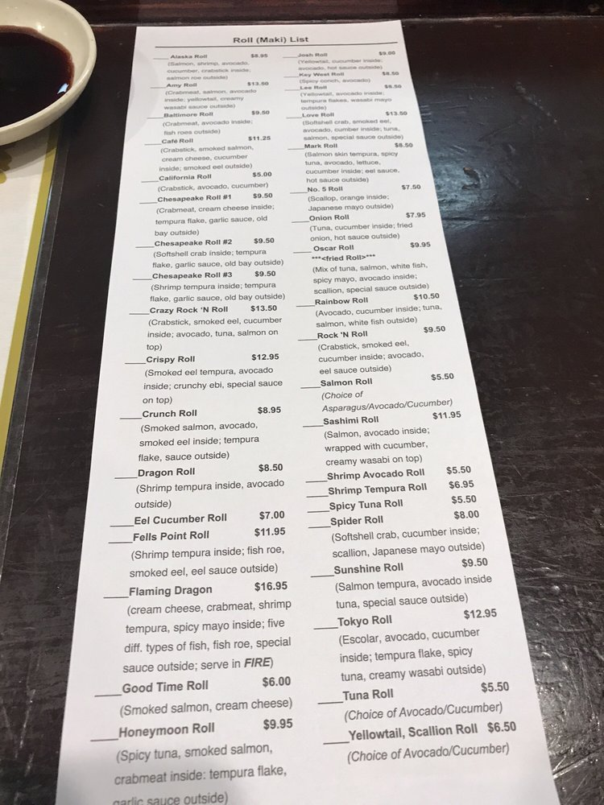
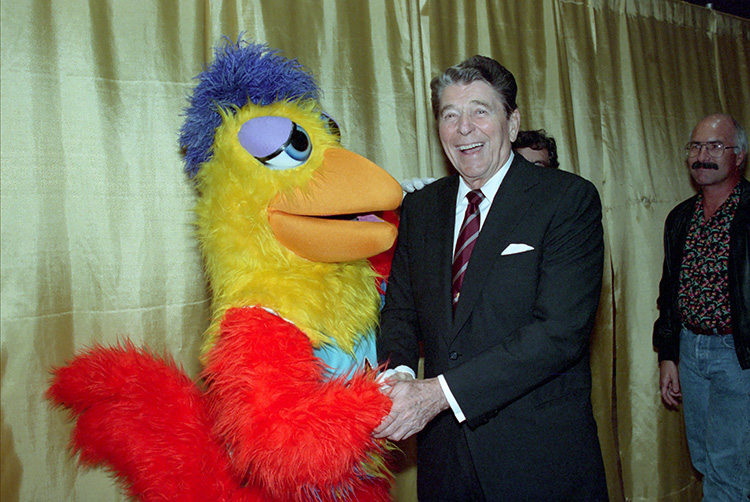
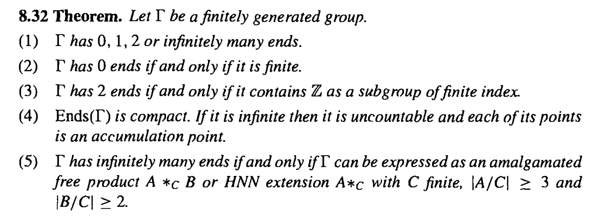
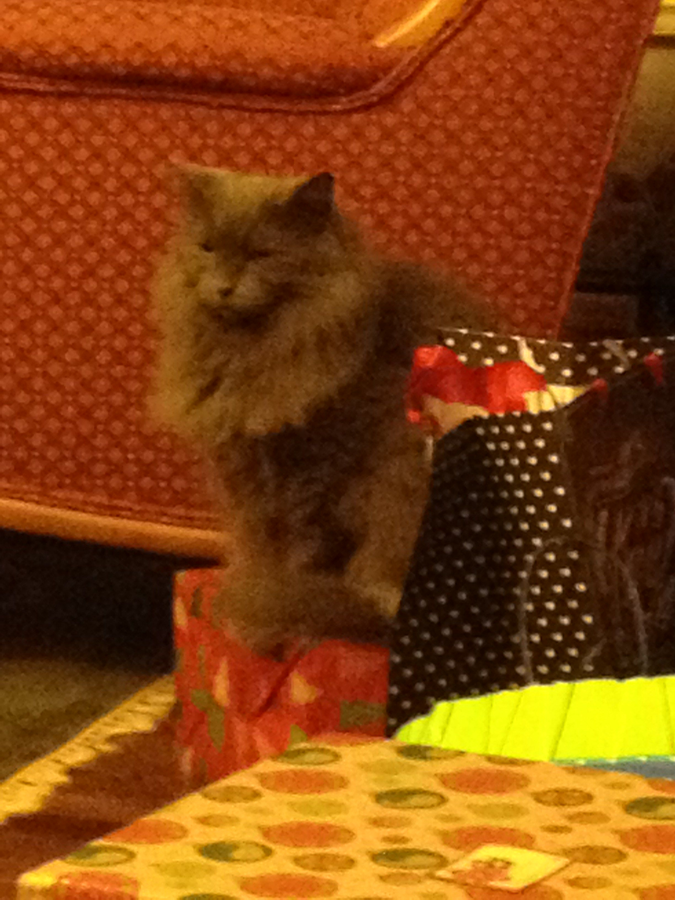

VIP Zone Quiz
1. Which roll on this list would Anthony Dender most likely order?

Crunch Roll
Flaming Dragon
Tokyo Roll
Spicy Tuna Roll
Next
2. Which of these facts about The Gipper is NOT true?

He was obsessed with jelly beans
He owned a pet parrot that had to be removed from his funeral for cursing too loud
He once claimed trees cause more pollution than cars
He will gip you
Next
3. What is the name of the following theorem in geometric group theory?

Gromov's theorem on groups of polynomial growth
Stallings' theorem
PEMDAS
No-ghost theorem
Next
4. Which of these countries has Anthony Dender NEVER stepped foot in?
Bosnia and Herzegovina
Czechia
Hungary
United States of America
Next
5. What is the name of this cat?

Sasha
Sylvie
Sandy
Sophie
Next
6. Which country is this the flag of?
Senegal
Suriname
Burkina Faso
Myanmar
Next
7. In what number of languages has Anthony Dender earned more than 1000 XP on Duolingo?
2
5
13
26
Next
8. According to the official
quiz on disney.com
, which disney princess is Anthony Dender?
Pocahontas
Aurora
Belle
Tiana
Next
9. Which of these is NOT a former Minecraft username of Anthony Dender?
qogger
cool_cool_cool_
miencwaf
gorilaman2469
hop_to_the_bop
MineCraft7779
ImBeowulf
Next
10. In general, a space X being geodesic does not guarantee that all maximal undergeodesics in X are geodesics. Which of the following additional conditions on X do guarantee this?
X is locally compact.
X is second countable.
X is complete.
X is equal to 3.
Submit Quiz
Welcome to the VIP Zone.
This is the space for true Dender acolytes. Under construction.